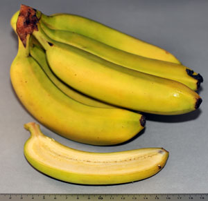

Musa × paradisiaca L.

Banana
Banana
Musa × paradisiaca L. Banana | |
|  | Botanical name Musa × paradisiaca L. | Botanical family Musaceae |
| Synonym | Synonym | |
| Plant parts used 1:Fruit or berry, 2:Fruit or berry, peel removed, core, pit or seed removed | ||
| LanguaL description B1266 BANANA | ||
National Names and Synonyms
| Country | Name | Synonyms |
|---|---|---|
| Bulgaria | Bananovo durvo | |
| Denmark | Almindelig Banan | Melbanan, Frugtbanan |
| Finland | Banaani | |
| France | Banane | |
| Germany | Banane | Desertbanane |
| Greece | Banania | |
| Iceland | Banani | |
| Italy | Banano | |
| Netherlands | Banaan | |
| Norway | Spisebana | Melbanan, Fiberbanan |
| Poland | Banan | |
| Portugal | Bananeira-do-paraíso | |
| Spain | Plátano | |
| Sweden | Kokbanan | |
| Turkey | Muz | |
| United Kingdom | Banana | banana tree |
| 2020-10-30 | Copyright © 2006 EU Concerted EuroFIR | Page 1 |
Musa × paradisiaca L. Banana Constituents | |
| Fruit or berry | |||||||
| Compound class | Compound | ||||||
|---|---|---|---|---|---|---|---|
| Anthocyanins | Cyanidin | ||||||
| Anthocyanins | Delphinidin | ||||||
| Anthocyanins | Malvidin | ||||||
| Biogenic amines | Dopamine | ||||||
| Biogenic amines | Norepinephrine | ||||||
| Biogenic amines | Serotonin | ||||||
| Carotenoids | Lutein | ||||||
| Carotenoids | Zeaxanthin | ||||||
| Cinnamic acid derivatives | Quinic Acid | ||||||
| Coumestans | Coumestrol | ||||||
| Extractable polyphenols (EPP) | Not applicable (EPP) | ||||||
| Flavanols | Catechin | ||||||
| Flavanols | (-)-Epicatechin | ||||||
| Flavones | Apigenin | ||||||
| Flavones | Luteolin | ||||||
| Flavonols | Kaempferol | ||||||
| Flavonols | Myricetin | ||||||
| Flavonols | Quercetin | ||||||
| Flavonols | Quercetin-3-rutinoside | ||||||
| Hydrolysable polyphenols (HPP) | Not applicable (HPP) | ||||||
| Isoflavones | Biochanin A | ||||||
| Isoflavones | Daidzein | ||||||
| Isoflavones | Formononetin | ||||||
| Isoflavones | Genistein | ||||||
| Isoflavones | Glycitein | ||||||
| Isoflavones | Isoflavone Total | ||||||
| Lignans | Lariciresinol | ||||||
| Lignans | Matairesinol | ||||||
| Lignans | Mixture of lignans | ||||||
| Lignans | Pinoresinol | ||||||
| Lignans | Secoisolariciresinol | ||||||
| Lignans | Shonanin | ||||||
| Lignans | Syringaresinol | ||||||
| Mixed compound classes | Total Phenolics (Folin-C) | ||||||
| Non-extractable proanthocyanidins (NEPA) | Not applicable (NEPA) | ||||||
| Oxalates | Oxalate | ||||||
| Phytosterols | Campesterol | ||||||
| Phytosterols | ß-Sitostanol | ||||||
| Phytosterols | beta-Sitosterol | ||||||
| Phytosterols | Stigmasterol | ||||||
| 2020-10-30 | Copyright © 2006 EU Concerted EuroFIR | Page 2 |
Musa × paradisiaca L. Banana Constituents | |
| Fruit or berry, peel removed, core, pit or seed removed | |||||||
| Compound class | Compound | ||||||
|---|---|---|---|---|---|---|---|
| Flavanols | (-)-Epicatechin | ||||||
| Flavanols | Epigallocatechin | ||||||
| 2020-10-30 | Copyright © 2006 EU Concerted EuroFIR | Page 3 |